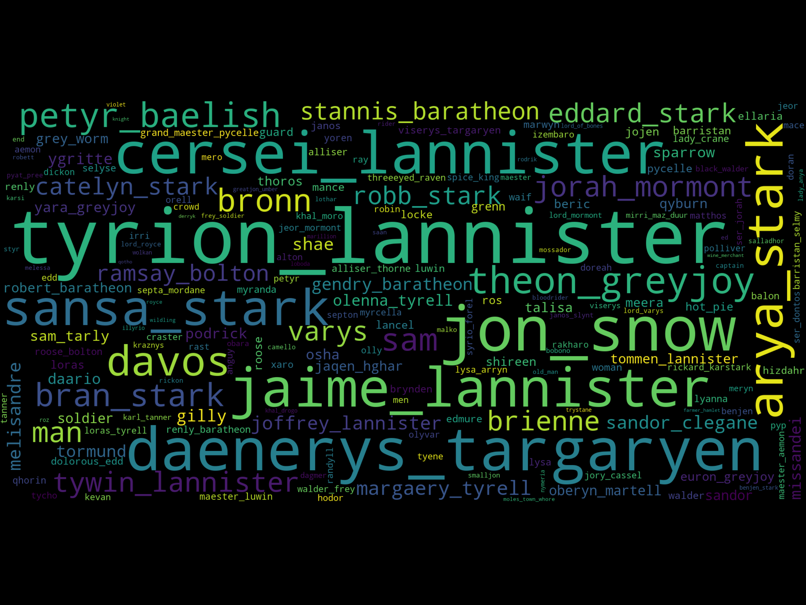

Top Rated Episodes
| season | episode_name | director | imdb_rating | notable_death_count | imdb_description |
|---|---|---|---|---|---|
| 3 | The Rains of Castamere | David Nutter | 9.9 | 8 | Robb and Catelyn arrive at the Twins for the wedding. Jon is put to the test to see where his loyalties truly lie. Bran's group decides to split up. Daenerys plans an invasion of Yunkai. |
| 5 | Hardhome | Miguel Sapochnik | 9.9 | 4 | Tyrion advises Daenerys. Sansa forces Theon to tell her a secret. Cersei remains stubborn. Arya meets her first target. Jon and Tormund meet with the wildling elders. |
| 6 | Battle of the Bastards | Miguel Sapochnik | 9.9 | 4 | Jon and Sansa face Ramsay Bolton on the fields of Winterfell. Daenerys strikes back at her enemies. Theon and Yara arrive in Meereen. |
| 6 | The Winds of Winter | Miguel Sapochnik | 9.9 | 11 | Cersei and Loras Tyrell stand trial by the gods. Daenerys prepares to set sail for Westeros. Davos confronts Melisandre. Sam and Gilly arrive in the Citadel. Bran discovers a long-kept secret. Lord Frey has an uninvited guest. |
| 7 | The Spoils of War | Matt Shakman | 9.8 | 0 | Daenerys takes matters into her own hands. Arya reaches her destination. Jaime and Bronn collect the spoils from the war with the Tyrells. |
| 6 | The Door | Jack Bender | 9.7 | 5 | Sansa and Jon make plans. Arya is given another chance to prove herself. Jorah confesses a secret to Daenerys. Tyrion meets with a red priestess. Yara finds her rule tested. Bran discovers the origin of the White Walkers. |
| 4 | The Children | Alex Graves | 9.7 | 4 | Jon makes an important decision. Daenerys experiences new consequences. Brienne and Podrick have an unexpected encounter. Bran achieves a goal, while Tyrion makes an important discovery. |
| 4 | The Lion and the Rose | Alex Graves | 9.7 | 3 | Joffrey and Margaery's wedding has come. Tyrion breaks up with Shae. Ramsay tries to prove his worth to his father. Bran and company find a Weirwood tree. |
| 2 | Blackwater | Neil Marshall | 9.7 | 2 | Stannis Baratheon's fleet and army arrive at King's Landing and the battle for the city begins. Cersei plans for her and her children's future. |
| 4 | The Laws of Gods and Men | Alik Sakharov | 9.7 | 0 | Tyrion's trial has come. Yara and her troops storm the Dreadfort to free Theon. Daenerys meets Hizdar zo Loraq. Stannis makes a deal with the Iron Bank of Braavos. |
Most Outspoken Characters
